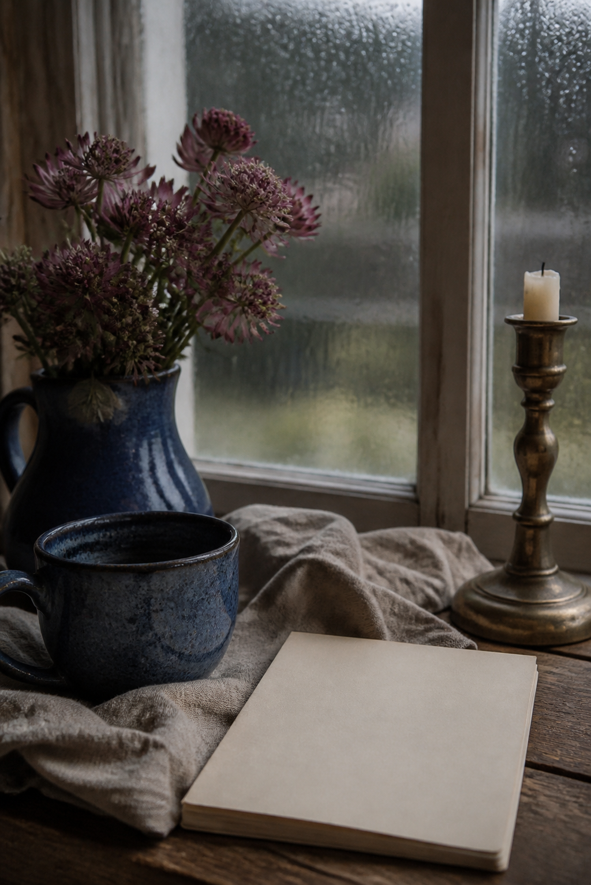
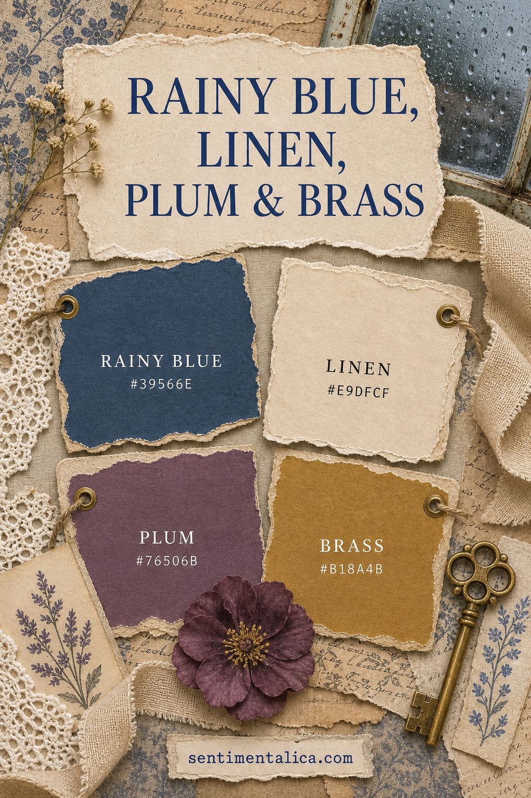

Cool colors can still feel cozy. The secret is to surround rainy blue with a warm natural neutral, soften it with dusty plum, and use brass like reflected lamplight rather than metallic decoration everywhere.

Anchor with Rainy Blue
Rainy Blue #39566E is deep enough for a photo mat, journal cover, pocket, or painted frame. Use a broad shape so the color feels intentional. Tiny scattered blue scraps can make the page visually cold.
Open the composition with Linen
Linen #E9DFCF is the main breathing color. Choose cream paper, natural fabric, pale thread, and unbleached lace. Its subtle warmth separates blue and plum without introducing another noticeable hue.

Use Plum as a soft bridge
Plum #76506B connects blue’s coolness to the warmth of brass. Add it through a flower, narrow paper layer, ribbon, or pencil mark. Choose a dusty plum rather than a bright purple so the spread stays quiet.
Treat Brass as light
Brass #B18A4B should appear where light might naturally catch: an eyelet, key, clip, wax mark, or fine painted edge. One metal object is often enough. Too many shiny pieces compete with photographs and writing.
Keep the values separated
Let linen remain clearly light, plum remain mid-tone, and rainy blue stay dark. If all materials drift toward the same gray middle, the page looks muddy. Compare pieces in daylight before gluing.
Try it with black-and-white photographs
This palette frames monochrome family images, rainy travel photographs, book pages, and evening memories beautifully. Place the photograph on linen first, add blue behind it, and use plum away from faces.
Change the mood through proportion
More linen makes the spread airy; more blue makes it reflective; more plum makes it romantic. Brass should remain nearly constant and small. Adjusting proportion is often more effective than adding a fifth color.
This is a palette for quiet weather and thoughtful stories. Its warmth comes from texture, natural paper, and the suggestion of lamplight rather than from bright seasonal color.
Image note: Some visuals in this article were created with AI and curated by Sentimentalica.